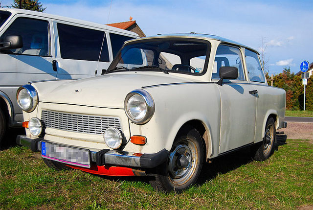
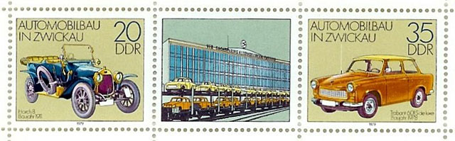
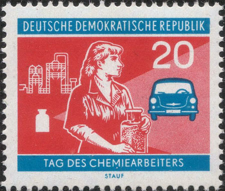
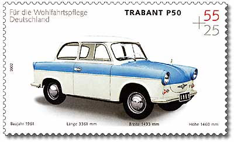
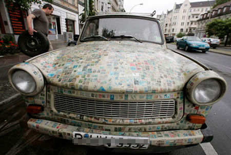
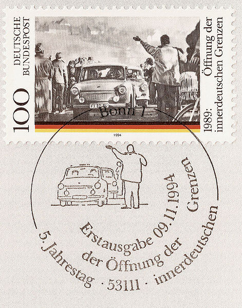
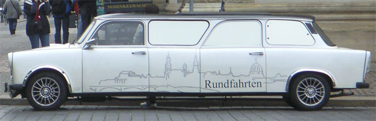

“The Trabi was a lot like East Germany,” said actor Wolfgang Stumph, who costarred with a heroic blue Trabant in a 1991 German movie, Go Trabi Go. “It was far from perfect, but somehow it worked. You had to improvise every day to keep it going. It was small and smelly and broke down a lot, but it was what we had.”

The Trabant was a steel monocoque design with roof, bootlid/trunklid, bonnet/hood, bumpers/fenders and doors in Duroplast, a form of plastic containing resin strengthened by wool or cotton. This helped the GDR to avoid expensive steel imports but, in theory, did not provide much crash protection, although in crash tests it allegedly performed superior to some contemporary Western hatchbacks. Because the car lacked a fuel pump, the fuel tank was placed high up in the engine compartment so that fuel could be fed to the carburettor by gravity; a trade-off of this design is an increased fire risk in front-end accidents. The Trabant's air cooled two cylinder 500 cc (31 cu in) (later 600cc) two-stroke engine was derived from a pre-war DKW design, with minor alterations being made throughout the car's production run.
The name, meaning 'satellite' or 'companion ' in German, was inspired by Soviet Sputnik. Production of the Trabant on April 30, 1991 reached 3.7 million vehicles.
DDR - 04/03/1979. Mi. 2423 - 2412. Automobile Mafacturing in Zwickau. On the right: Trabant 601 S de luxe (!)Trabant's body shell, made from a fibre-reinforced thermosetting plastic, obviously was the pride of the East German chemical industry, and for this reason it was commemorated on the stamp shown below:

DDR 11/10/1960. Mi. 802. Chemistry Worker's Day (Thanks, Jan Martin - RCSD)It soon became apparent that there was no place for the Trabant in the reunified German economy. The inefficient, labour-intensive production line was kept open only because of government subsidies. Demand plummeted, as residents of the east preferred second-hand western cars which were more efficient and put out less pollution. The production line closed in 1991 and the factory in Mosel (Zwickau), where the Trabant 1.1 had been made, was sold to Volkswagen. Source

Germany - 21/05/2002. Trabant P50, built 1958.Like a motorcycle, the Trabi’s two-stroke engine was lubricated by mixing oil with the gasoline. To East Germans fleeing westward in late 1989, this burning mixture produced “the smell of freedom.”
The Trabant’s noisy twenty-six-horsepower engine produced as much pollution as thirty Mercedes-Benzes—probably the only comparison that will ever be made between Mercedes and Trabant. The Trabant lacked carpeting, a glove box, or even a fuel gauge. The rear windows were glued shut. Its sole passenger comfort was a primitive heater, in which a fan simply blew hot engine air into the interior—along with “the smell of freedom.”
The Trabi stamp car (thanks, Rodney - RCSD)All this might imply that the Trabant was undesirable. Far from it. The average Trabant owner waited as long as eighteen years to take delivery of a car. The price equated to a year’s salary, and black-market Trabis sold for double that amount.
The Trabi stopped as leisurely as it accelerated. Road-testing a Trabant in 1990, Car and Driver magazine reported: “The engine provides no braking effect at all. Nor do the brakes.”
For its contribution to democracy by bringing thousands of East Germans across collapsing Communist borders, Car and Driver named the Trabant the “1990 Import Car of the Year.” Source
Germany - 11/9/2001. 5th anniversary of the opening of the inter-German frontierTrabant Jokes
- What's the best feature of a Trabant?: There's a heater at the back to keep your hands warm when you're pushing it.

Trabant Stretch Car. "Rundfahrten" means "Tours"- How do you double the value of a Trabant?: Fill up the tank!
Berlin Wall - East Side Gallery: Leonid Brezhnev and Erich Honecker riding together in a Trabant- How do you turn a Trabant into a sports car?: Put sneakers in the trunk!
Created: 07/19/2011. Revised: 1/11/2024 .
Copyright © 2011 - 2024 by Victor Manta, Switzerland/USA.
All rights reserved worldwide.